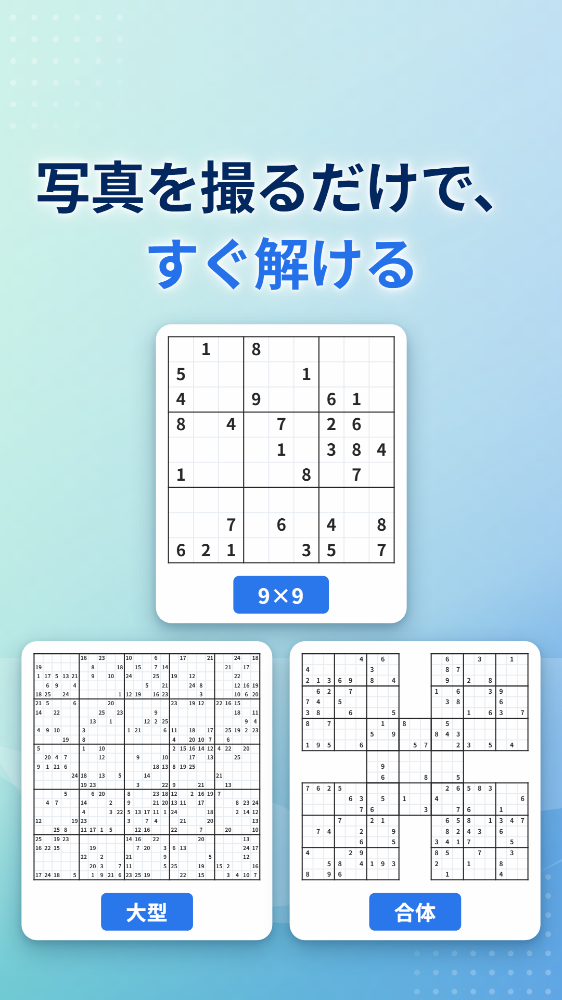
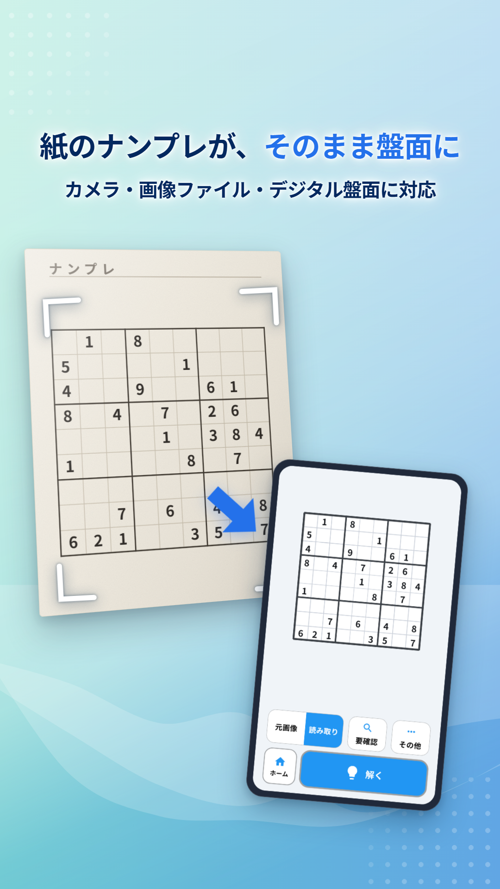
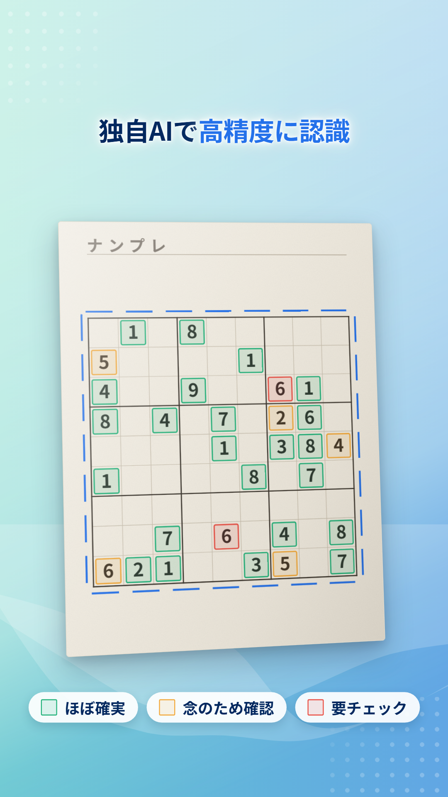
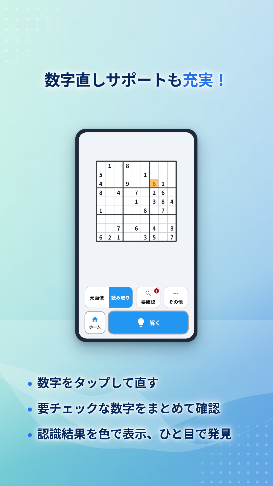
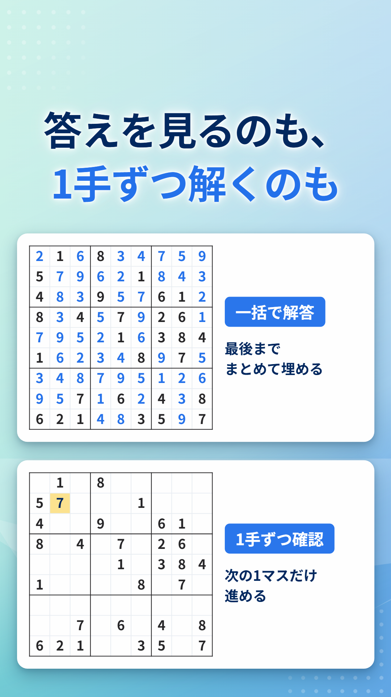
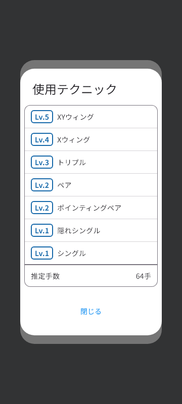
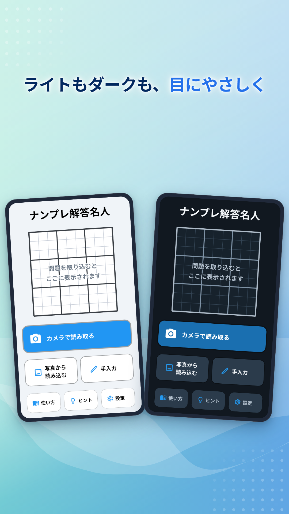

ナンプレ解答名人の機能紹介
ナンプレ解答名人は、新聞や雑誌のナンプレを写真で読み取り、答えや次の1手を確認できるアプリです。このページでは、できることを1つずつ、実際の画面と一緒に紹介します。
9×9も、大型も、合体も同じ手順で解けます
標準の9×9に加えて、16×16・25×25・30×30の大型ナンプレと、サムライのように盤面が重なる合体ナンプレを読み取れます。合体は14連まで動作を確認しています。25×25や30×30のように2桁の数字が並ぶ盤面も、そのまま読み取ります。
盤面が大きいほど、手で入力する量は一気に増えます。
| 盤面 | マスの数 |
|---|---|
| 9×9 | 81 |
| 16×16 | 256 |
| サムライ（5連の合体） | 369 |
| 25×25 | 625 |
| 30×30 | 900 |
どの盤面でも、撮って読み取るところからの手順は9×9と変わりません。

紙の問題も、画面の問題も読み取れます
新聞・雑誌・問題集
アプリのカメラで盤面を撮ります。盤面全体が枠に入るように、できるだけ正面から撮ってください。
アプリやWebの問題
スクリーンショットや保存済みの画像を選ぶだけです。紙より線がはっきりしているので、読み取りも安定します。

読み取った数字の確かさを3段階で表示します
数字の読み取りには、ナンプレの盤面に合わせて学習させた独自のAIを使っています。それでも、影や印刷のかすれで読み違えることはあります。
そこで、読み取った数字ごとに、どれくらい自信があるかを色で表示します。
- ほぼ確実
- 念のため確認
- 要チェック
全部のマスを見直さなくても、色の付いたマスだけ見れば済みます。

違っている数字は、その場で直せます
- タップして直す: 違っている数字をタップして、正しい数字を選びます。
- 要確認をまとめて見る: 「要確認」ボタンから、確認したほうがよい数字を順番に見ていけます。
- 元の写真と見比べる: 「元画像」と「読み取り」を切り替えて、写真と読み取り結果を見比べられます。
読み取りに任せきりにせず、納得してから解答に進めます。

答えを全部見ることも、1手ずつ進めることもできます
一括で解答
最後まで一度に埋めます。雑誌の答え合わせや、自分の解答が合っているかの確認に向いています。
1手ずつ確認
次に埋まる1マスだけを表示します。前後に行き来しながら、どのマスがどの順で決まっていくかをたどれます。途中で詰まったところだけ見て、続きは自分で解く使い方もできます。
使われた解き方
その問題を解くのに使ったテクニック（隠れシングル、ポインティングペア、Xウィングなど）を難しさのレベルと一緒に表示します。推定の手数も分かるので、問題の難しさの目安になります。


ライトとダークを選べます
明るい画面と暗い画面を切り替えられます。夜に紙の問題と見比べるときは、ダークにするとまぶしさを抑えられます。

よくある質問
- うまく読み取れません。
- 明るい場所で、盤面全体がゆがまず写るように撮ってください。見開きのページは、紙を平らにしてから撮ると認識しやすくなります。読み取り後は、色の付いたマスを中心に確認して直してください。
- 最後まで解けないことはありますか。
- 読み取りに誤りがあって盤面が矛盾している場合や、問題によっては、途中で進めなくなることがあります。その場合は、読み取り結果に誤りがないかを先に確認してください。
ナンプレ解答名人
新聞・雑誌の問題はカメラで、アプリやWebの問題はスクリーンショットで読み取り、自動で解答します。